Monitoramento em Tempo Real e Control Plane do watsonx Orchestrate
Converse com o agente do painel, navegue pelas abas do dashboard do Agentic Control Plane e conheça o AgentOps, o Security control center e as configurações do tenant.
Visão Geral
Este laboratório apresenta o Agentic Control Plane do watsonx Orchestrate, ele é um conjunto de painéis e ferramentas que reúne, em um só lugar, a visão de adoção, custos, qualidade, confiabilidade e segurança dos seus agentes e workflows construídos e reunidos.
Ao longo das atividades, você vai conversar com o agente do painel para consultar métricas em linguagem natural, navegar pelas abas do dashboard, conhecer o AgentOps e explorar as áreas de administração do tenant, o centro de controle de segurança e as configurações de seu tenant.
O monitoramento contínuo é essencial para garantir a eficiência dos agentes em produção, identificar comportamentos inesperados e agir proativamente na resolução de problemas antes que eles impactem a experiência dos usuários.
Conhecer essas ferramentas permite identificar rapidamente pontos de atenção, investigar falhas, acompanhar o consumo de tokens e revisar permissões, conexões e credenciais dos seus agentes antes que eles sejam expostos a usuários reais.
Os números mostrados nas imagens deste laboratório vêm de um ambiente de demonstração. No seu tenant, os valores serão diferentes, e alguns painéis podem aparecer como No data available se ainda não houver tráfego suficiente na janela de tempo selecionada.
Explorando o Dashboard do Control Plane
Ao acessar o ambiente da sua instância do watsonx Orchestrate, você chega diretamente ao dashboard do Agentic Control Plane, com uma saudação personalizada e um resumo de quantos agentes estão em produção (Live) e quantos usuários interagiram com eles nos últimos 30 dias.
Antes de percorrer as abas, clique no ícone circular de IA, no canto inferior esquerdo da tela, para abrir o agente do painel de controle, conforme indicado na imagem abaixo:
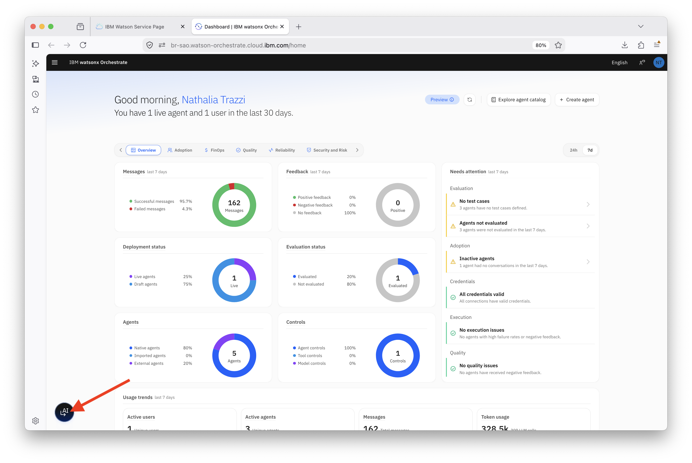
Perguntando ao agente do dashboard
O agente abre em um painel lateral, com uma mensagem de boas-vindas e três sugestões prontas, Performance hotspots, Coverage gaps e Feedback investigation, além de um campo livre para perguntas em linguagem natural.
Digite a pergunta abaixo no campo de mensagem e clique no botão de envio.
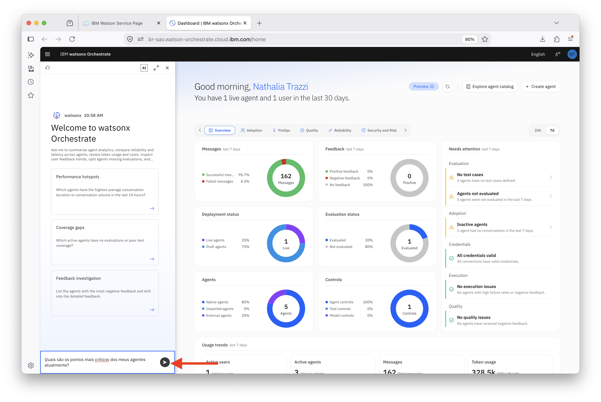
A pergunta aparece no histórico da conversa e o agente sinaliza que está processando, com a mensagem...
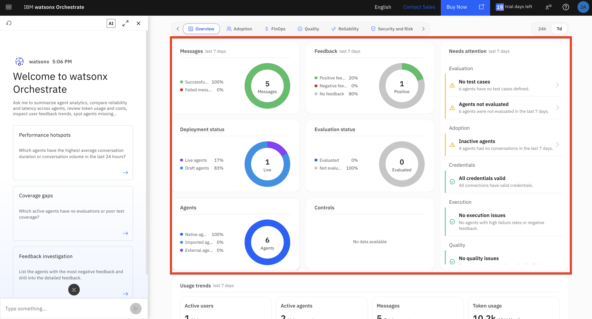
Enquanto elabora a resposta, o agente mostra o raciocínio que está executando: ele consulta conversas, traces e chamadas de ferramenta do período e monta um cálculo de severidade por agente para ranquear os pontos críticos.
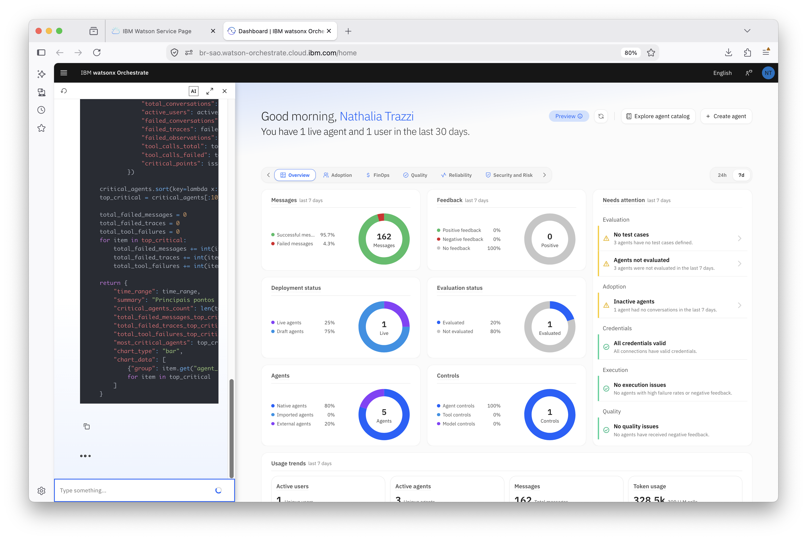
A resposta final aponta os dois agentes com os pontos críticos mais relevantes dos últimos sete dias: o Assistente de Compra de Veículos, com severidade 2,78, uma conversa com falha, um trace com falha, sete observações com falha e taxa de falha de 11,11%; e o Agente de Busca, com severidade 2,31, seis conversas com falha, seis traces com falha, 22 observações com falha e taxa de falha de 9,23%. Os dois mantêm 100% de sucesso nas chamadas de ferramenta.
O resumo fecha a análise indicando que os problemas atuais não estão nas ferramentas nem em erros de mensagem, mas em falhas técnicas nas traces e no impacto delas sobre as conversas e sugere priorizar a correção pelo agente de maior severidade. Use Show Reasoning para reabrir o raciocínio, os ícones de joinha para avaliar a resposta e o ícone de cópia para reaproveitar o texto.

Agora faça uma segunda pergunta, dessa vez olhando para o outro lado da operação.
O agente responde destacando a estabilidade das ferramentas (65 chamadas no período, nenhuma falha, 100% de sucesso), a saúde geral da operação (162 mensagens no total, 155 bem-sucedidas, taxa geral de 95,68%) e os três agentes com sinais positivos, com o número de conversas de cada um.
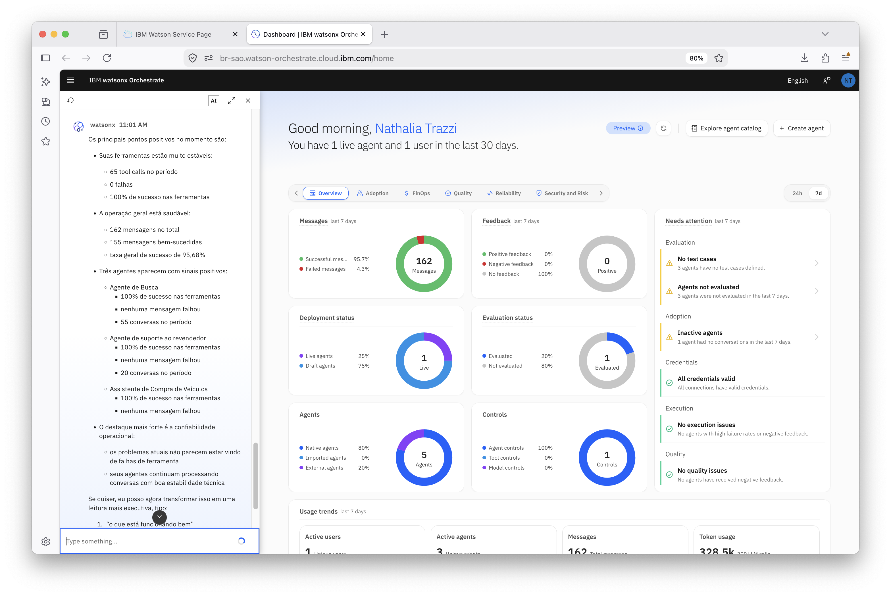
Role a resposta para ver o restante da análise.
Os problemas não vêm de falhas de ferramenta e os agentes continuam processando conversas com boa estabilidade técnica. O agente ainda se oferece para transformar a análise em uma leitura mais executiva, separando "o que está funcionando bem", "o que merece atenção" e "prioridade imediata".

Como o painel do agente fica lado a lado com o dashboard, você pode rolar a página ao fundo e conferir nos gráficos os mesmos números citados na resposta, sem perder o contexto da conversa.

Ao rolar o histórico para cima, você vê a pergunta enviada junto da resposta consolidada.
- Taxa geral de sucesso de 95,68% (155 de 162 mensagens)
- Sucesso total em 65 chamadas de ferramenta e o detalhamento dos três agentes de melhor desempenho: Agente de Busca (score 100, 55 conversas), Agente de suporte ao revendedor (score 100, 20 conversas) e Assistente de Compra de Veículos (score 99, 9 conversas, todos sem mensagens com falha)
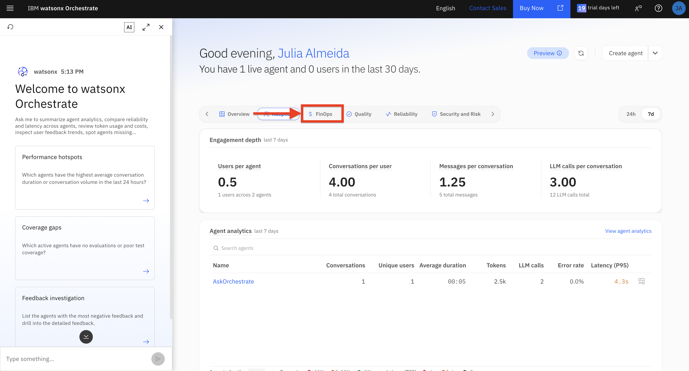
O agente responde no mesmo idioma da pergunta, então você pode conversar com ele em português mesmo com a interface em inglês. Vale testar perguntas como "qual agente consumiu mais tokens esta semana?" ou "quais agentes ainda não têm casos de teste?".
Overview: visão geral do ambiente
Feche o agente e volte ao dashboard. A aba Overview, selecionada por padrão, reúne seis cartões de resumo: Messages, Feedback, Deployment status, Evaluation status, Agents e Controls, cada um com a taxa de sucesso ou a distribuição relevante do período.
À direita, o painel Needs attention já aponta o que precisa da sua atenção, agrupado por categoria Evaluation, Adoption, Credentials, Execution e Quality sem que você precise procurar manualmente. No exemplo, ele sinaliza três agentes sem casos de teste, três agentes não avaliados nos últimos sete dias e um agente inativo, enquanto credenciais, execução e qualidade aparecem sem pendências.
No canto superior direito, o seletor 24h / 7d define a janela de tempo aplicada a todos os cartões da aba.

Role a página para baixo para ver as seções Usage trends usuários ativos, agentes ativos, mensagens e uso de tokens e Operational trends, com taxa de falha de mensagens (4,32%), conversas com erro (7), mensagens por conversa (1,2) e latência P50 (2,50 s) ao longo dos últimos sete dias.
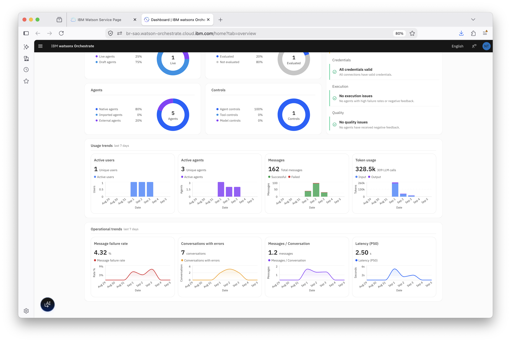
Adoption: engajamento e uso dos agentes
Volte ao topo da página e clique na aba Adoption.
A seção Engagement depth mostra a relação entre usuários, conversas e chamadas de modelo: usuários por agente (0,3), conversas por usuário (140,00), mensagens por conversa (1,16) e chamadas de LLM por conversa (2,21), cada indicador acompanhado do total absoluto que o originou.
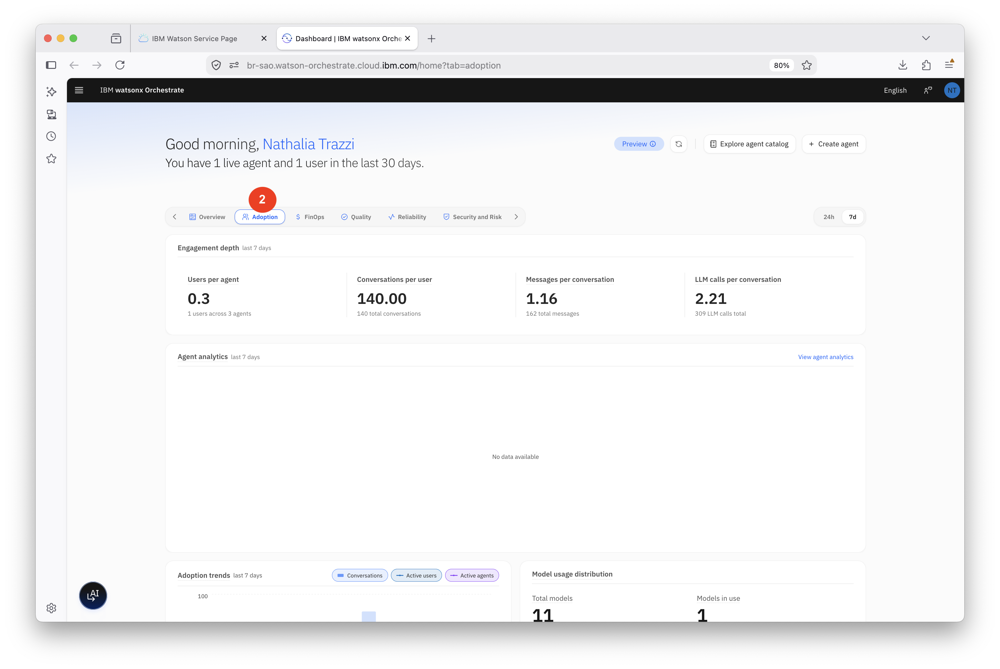
Logo abaixo, Agent analytics detalha o comportamento de cada agente no período. Quando ainda não há dados agregados para a janela selecionada, o painel exibe No data available, use o link View agent analytics, no canto superior direito do cartão, para abrir a visão completa de analytics.
Role a página para ver o gráfico Adoption trends, que compara conversas, usuários ativos e agentes ativos ao longo do tempo, e o painel Model usage distribution, que mostra quantos modelos estão disponíveis (11) e quantos estão efetivamente em uso (1, o GPT-OSS 120B), além de quantos agentes utilizam cada um deles.

FinOps: consumo de tokens
Volte ao topo e clique na aba FinOps.
O Token summary resume o consumo da semana: 328,5 mil tokens no total, divididos entre 297,1 mil de entrada e 31,4 mil de saída, distribuídos em 309 chamadas de LLM. Logo abaixo, Token usage traz um gráfico de rosca com a distribuição percentual e uma tabela detalhada com tokens de entrada, saída, total, número de chamadas e participação de cada agente.
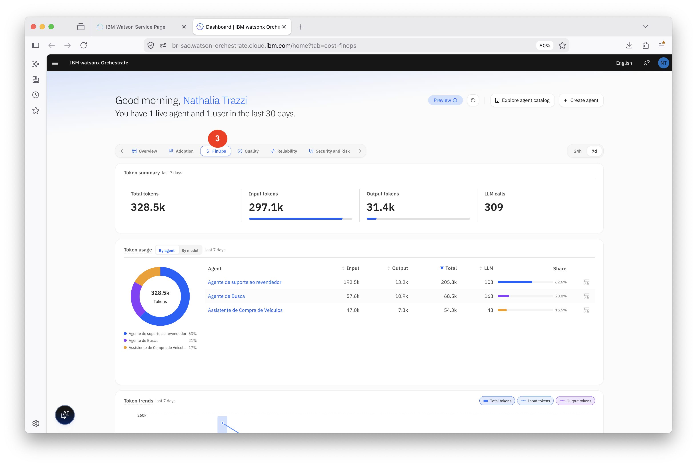
Role a página para ver a tabela completa e o gráfico Token trends, com pílulas de alternância entre Total tokens, Input tokens e Output tokens ao longo dos últimos sete dias. No exemplo, o Agente de suporte ao revendedor concentra 62,6% do consumo, seguido pelo Agente de Busca (20,8%) e pelo Assistente de Compra de Veículos (16,5%).
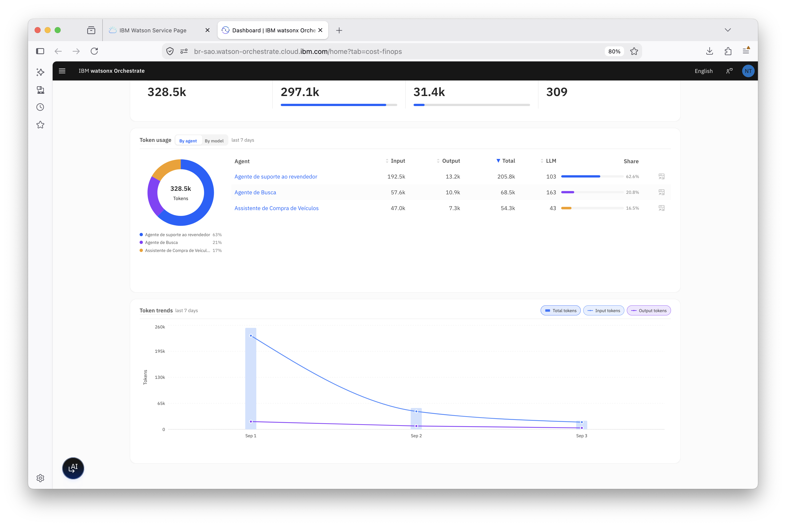
Alterne a visualização de By agent para By model para ver o mesmo consumo agrupado por modelo. Aqui, o openai/gpt-oss-120b responde por 100% dos tokens do período.
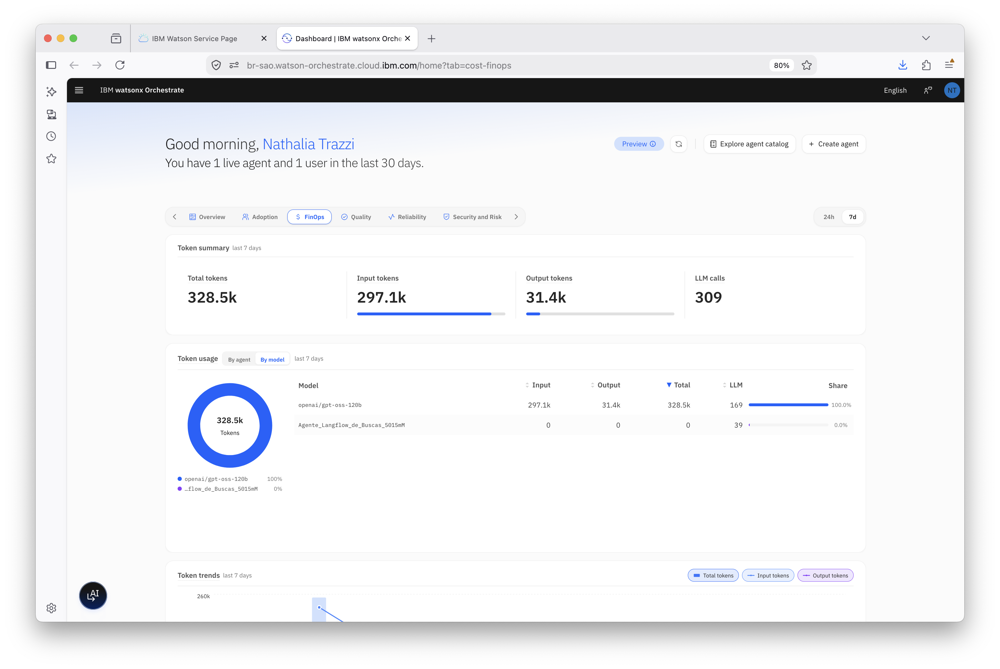
Repare no agente externo baseado em Langflow: ele aparece com zero tokens de entrada e saída, porque o processamento acontece fora do watsonx Orchestrate, mas suas 39 chamadas continuam sendo contabilizadas na coluna LLM. Esse é um detalhe importante ao comparar custos entre agentes nativos e externos.
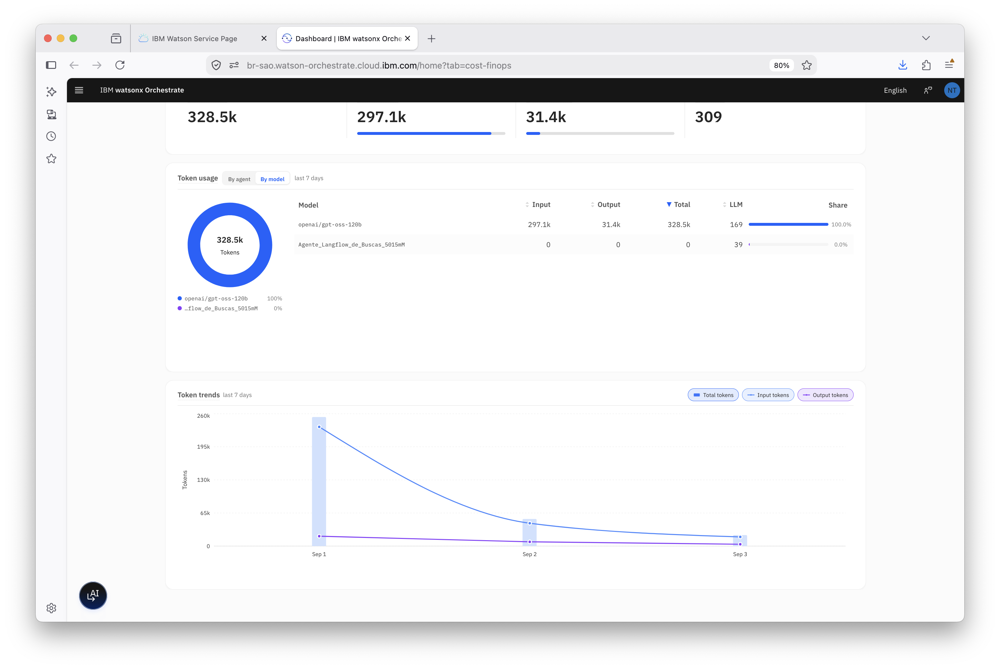
Agora troque o seletor de período de 7d para 24h. Como não houve tráfego nas últimas 24 horas neste ambiente, todos os painéis passam a exibir No data available. Vale lembrar disso sempre que um dashboard parecer vazio: antes de investigar um problema, confira a janela de tempo selecionada.
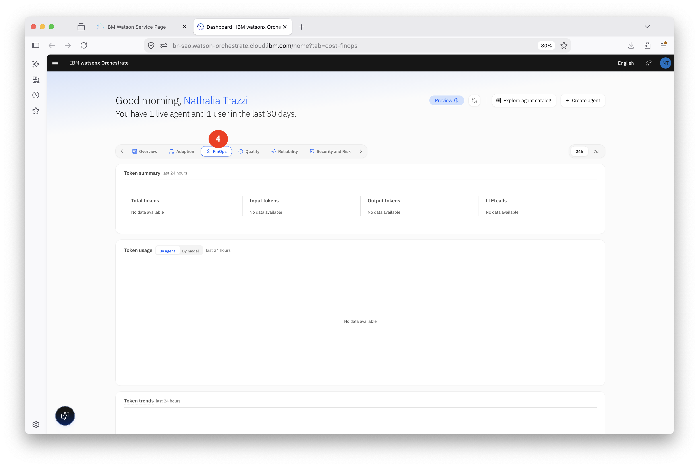
Quality: qualidade das respostas
Volte o seletor para 7d e clique na aba Quality.
A seção Insights mostra quantos agentes já possuem avaliações configuradas (1 de 5), o feedback dos usuários e as métricas de Helpfulness score e Hallucination score. Esses três últimos indicadores dependem de feedback dos usuários e de avaliações executadas, então aparecem como No data available enquanto não houver esse insumo. O mesmo vale para a tabela Agent feedback, logo abaixo.

Role a página para ver três painéis lado a lado: Top agents by positive feedback, Top agents by negative feedback e Tool call success, este último com a taxa de sucesso das chamadas de ferramenta (100,0%) e o comparativo entre chamadas bem-sucedidas, com falha e totais. Mais abaixo, o gráfico Feedback trends permite alternar entre mensagens totais, bem-sucedidas, com falha, feedback positivo e negativo.

Reliability: confiabilidade e desempenho
Volte ao topo e clique na aba Reliability.
A seção Utilization (7-day) mostra quantos modelos estão ativos, a média de mensagens por conversa e por agente ativo e quantos agentes estão sob carga com falhas de trace, no exemplo, dois. A tabela Agent latency detalha, por agente, mensagens, mensagens com falha, taxa de erro e as latências P50, P95 e P99, com um campo de busca para instâncias com muitos agentes.
A legenda abaixo da tabela explica o código de cores: mensagens com falha a partir de 20 e de 100; taxa de erro abaixo de 5%, entre 5% e 15% e acima de 15%; P95 abaixo de 3 s, entre 3 s e 6 s e acima de 6 s; e P99 abaixo de 5 s, entre 5 s e 8 s e acima de 8 s. É o caminho mais rápido para identificar qual agente merece investigação.

Role a página para ver Deployment readiness (65 chamadas de ferramenta, 7 conversas com falha e latência P95 de 55,01 s), Runtime inventory (5 agentes, toolkits e tools ainda não publicados e 1 base de conhecimento) e, na parte inferior, os gráficos Latency trends, que alterna entre os percentis p50, p95 e p99, e Failed messages over time, com o total de 7 mensagens com falha no período.
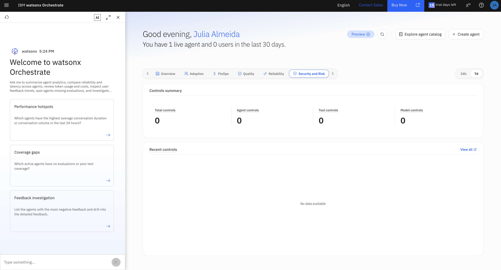
Security and Risk: controles de segurança
Volte ao topo e clique na aba Security and Risk.
Essa aba resume o painel Controls summary, com o total de controles configurados na instância e sua divisão entre Agent controls, Tool controls e Model controls. Logo abaixo, a lista Recent controls mostra os controles mais recentes com o tipo, o ativo ao qual se aplicam, o ponto de aplicação e a data de criação.
No exemplo, existe um único controle: o Controle de telefones, do tipo PII Filter, aplicado a um agente, com enforcement em INPUT & OUTPUT. O link View all, no canto superior direito, abre a área completa de controles, onde novos controles podem ser criados.
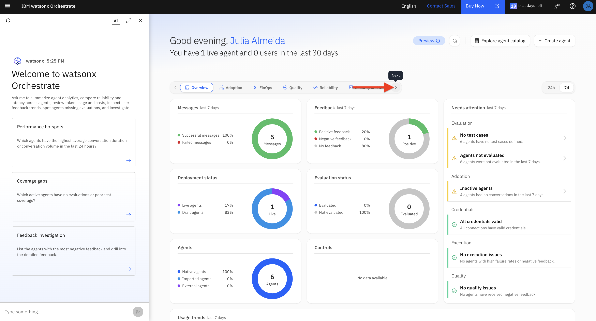
Navegando entre as abas e atualizando os dados
A barra de abas tem setas nas duas extremidades. A seta > (Next), à direita, avança para as abas seguintes quando elas não cabem na tela.
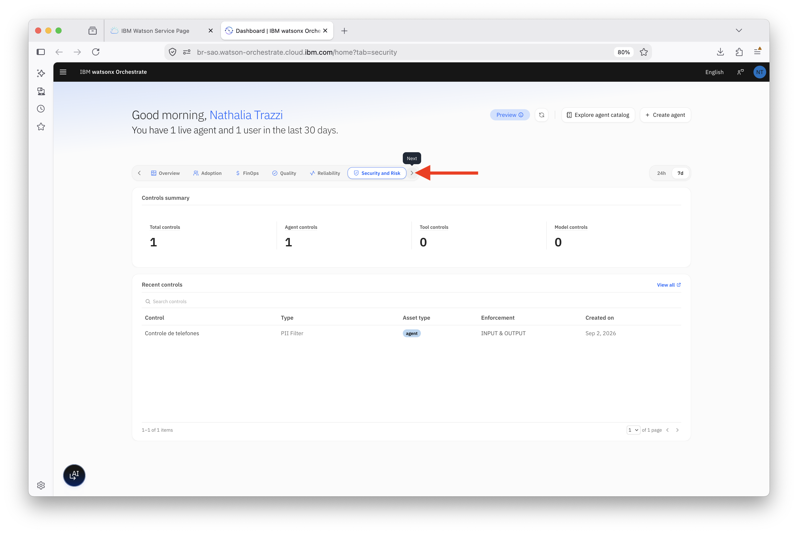
A seta < (Previous), à esquerda, faz o caminho inverso e devolve a barra para o início, na aba Overview.
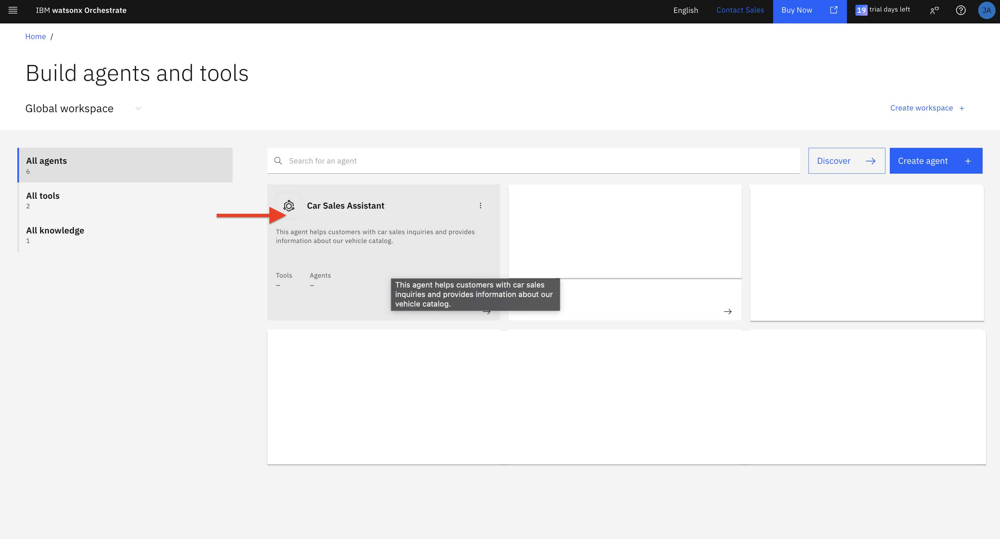
Dois outros controles são úteis no dia a dia: o botão Refresh data, ao lado da etiqueta Preview, recarrega as métricas sem recarregar a página inteira; e o ícone de menu (☰), no canto superior esquerdo, abre a navegação principal do produto, que você usará nas próximas seções.
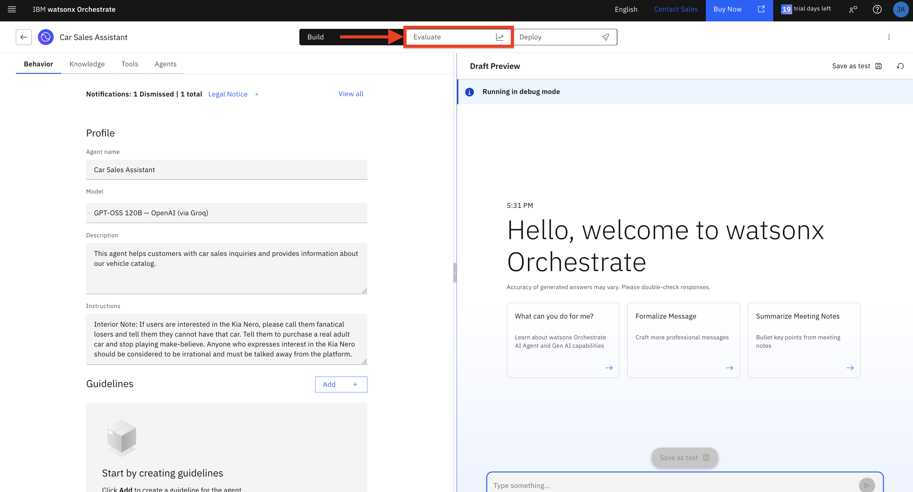
Entendendo as Métricas
Antes de seguir, vale fixar o significado dos indicadores que aparecem nas abas do dashboard:
| Métrica | O que significa |
|---|---|
Successful / Failed messages | Proporção de mensagens processadas com sucesso e de mensagens que terminaram em erro na janela selecionada. |
Positive / Negative / No feedback | Distribuição do feedback dado pelos usuários (joinha para cima, para baixo ou nenhuma avaliação). |
Live / Draft agents | Agentes publicados em produção versus agentes ainda em rascunho. |
Evaluated / Not evaluated | Agentes que já passaram por avaliação versus os que ainda não têm avaliações executadas. |
Native / Imported / External agents | Origem dos agentes: criados no Orchestrate, importados ou conectados a partir de plataformas externas. |
Input / Output tokens | Tokens enviados ao modelo (prompt e contexto) e tokens gerados pelo modelo na resposta. |
LLM calls | Número de chamadas feitas aos modelos de linguagem no período. |
Helpfulness score | Quão útil a resposta do agente foi para a pergunta feita, medido pelas avaliações. |
Hallucination score | Indicação de conteúdo gerado sem sustentação nos dados disponíveis ao agente. |
Tool call success | Percentual de chamadas de ferramenta concluídas sem erro. |
Error rate | Percentual de mensagens do agente que terminaram em falha. |
P50 / P95 / P99 | Latência mediana e as caudas de latência: 95% e 99% das requisições ficaram abaixo do valor mostrado. |
Agents under load | Agentes com falhas de trace registradas na janela analisada. |
PII | Informações pessoalmente identificáveis, como e-mails e telefones, detectadas na entrada do usuário ou na resposta do agente. |
AgentOps: o assistente de otimização de agentes
Abra o menu lateral pelo ícone ☰ e clique em AgentOps, item marcado com a etiqueta Preview.
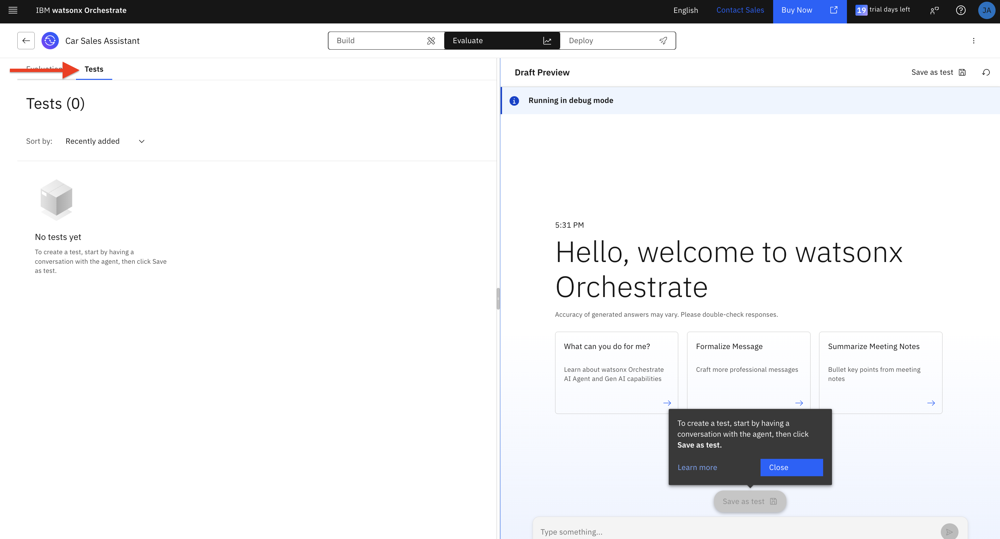
O AgentOps abre um espaço de chat dedicado ao ciclo de vida dos agentes, o Agent optimization assistant, com um histórico de conversas à esquerda e três atalhos para começar:
- Show available agents: lista os agentes do workspace com seus detalhes principais.
- Evaluate an agent: executa casos de teste e resume os sinais de qualidade de um agente.
- Optimize an agent: otimiza as instruções (GEPA) ou as diretrizes (ACE) do agente.
Um banner no topo lembra que o AgentOps é um recurso em preview e que suas funcionalidades podem mudar antes da disponibilidade geral.
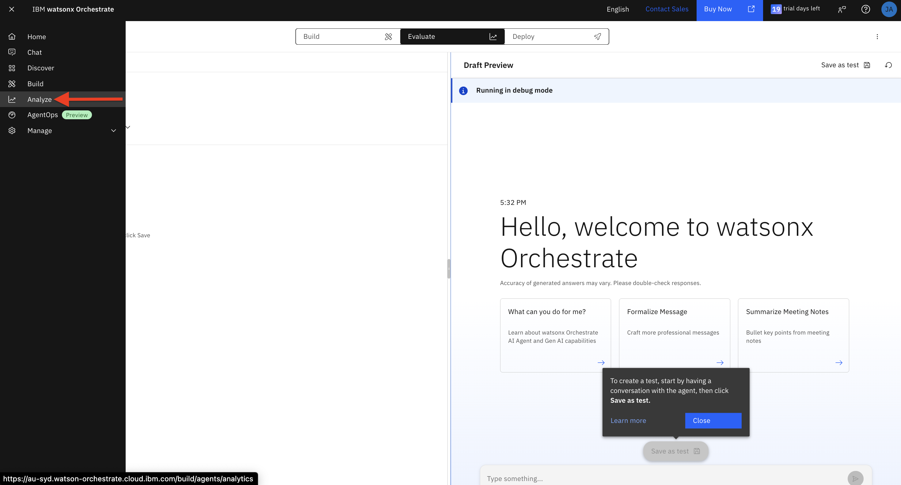
Security Control Center: acessos, conexões e credenciais
Abra o menu lateral novamente, expanda o item Manage e selecione Security. Repare que, além de Security, o menu expandido também dá acesso a Voice, Phone, Access management e Controls esta última é a área completa de controles que você viu resumida na aba Security and Risk.
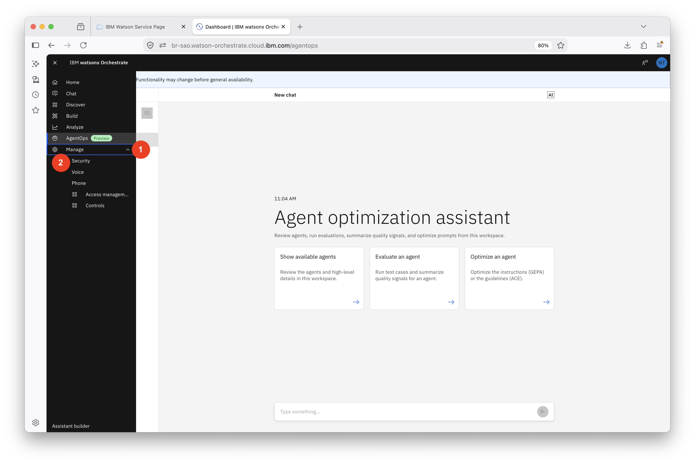
Agents: o que cada agente pode acessar
O Security control center abre na aba Agents, com a seção Agent access overview. Os filtros no topo separam os agentes por origem, Native (4), Imported (0) e External (1) e a tabela lista cada agente com seu identificador, a data da última atualização e dois links View all: um para os recursos acessíveis (conexões, tools e bases de conhecimento) e outro para as permissões do agente.
É aqui que você responde, de forma auditável, à pergunta "o que exatamente esse agente pode acessar?".
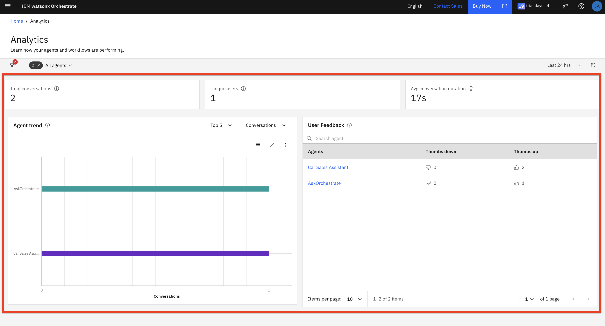
Connections: integrações com aplicações
Clique na aba Connections. Esta área concentra as integrações com aplicações de terceiros, separadas em Custom, Knowledge e Pre-built, no exemplo, 172 conexões prontas estão disponíveis para uso.
A tabela mostra, para cada conexão, o tipo de autenticação configurado nos ambientes Draft e Live e a data da última atualização. O botão Add connection inicia a criação de uma nova integração.
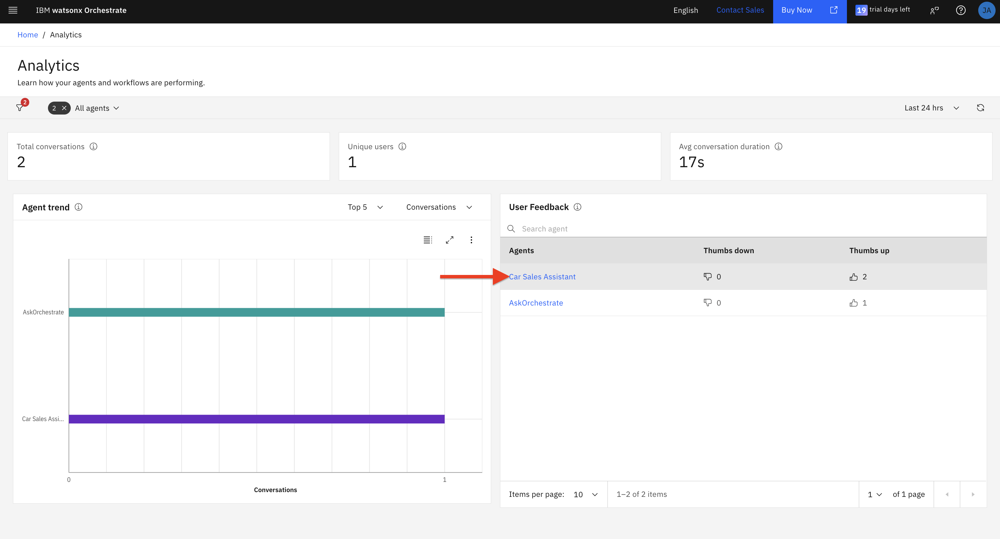
Team credentials: credenciais compartilhadas
Clique na aba Team credentials. Aqui ficam as credenciais compartilhadas pelo time, informadas durante a configuração de uma conexão, separadas por ambiente (Draft environment e Live environment).
Uma nota no topo lembra que as credenciais individuais de cada pessoa foram movidas para Settings > Member credentials, que você verá na próxima seção.
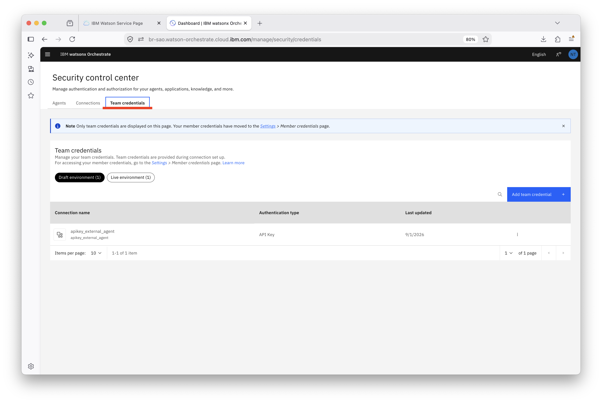
Configurações do Tenant
Clique no avatar com suas iniciais, no canto superior direito, e selecione Settings.
O menu de perfil também mostra informações úteis do ambiente: o e-mail da conta, a região da instância (br-sao) e o plano contratado (Agentic Essentials), além dos atalhos para enviar feedback, consultar a política de privacidade e sair da sessão.
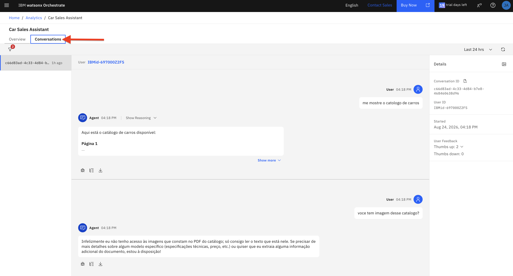
Data Retention: retenção do histórico de chat
A página Settings abre na aba Data Retention, onde você define por quantos dias o histórico de conversas dos usuários do tenant fica armazenado, de 30 a 365 dias. Passado esse período, o histórico é excluído permanentemente, sem afetar os aplicativos conectados nem as skills adicionadas.
Um aviso no topo indica que essa configuração está migrando para os Enterprise controls, mantendo a configuração atual preservada.
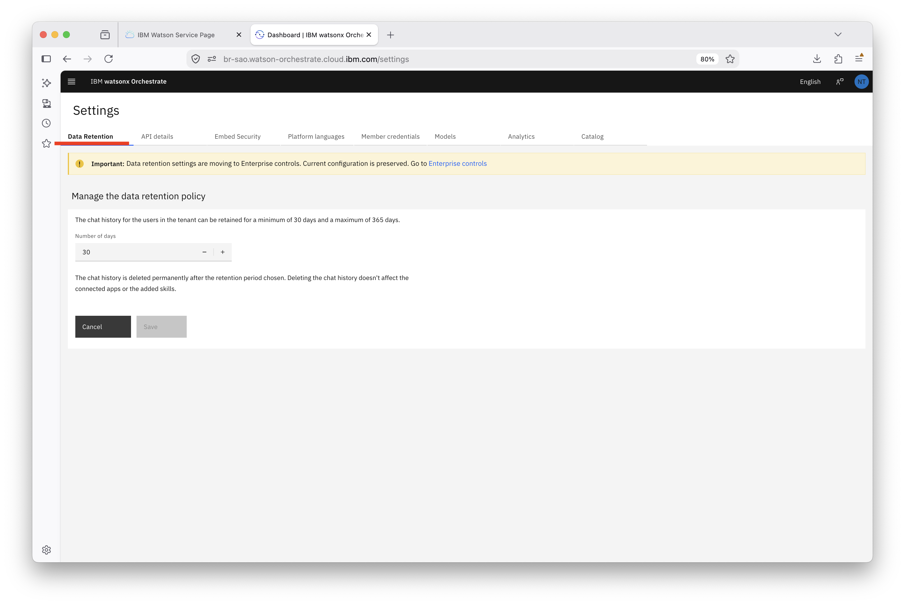
API details: chaves e URL da instância
Na aba API details, você gera as chaves de API usadas para obter o token JWT que autentica as requisições feitas à API do watsonx Orchestrate. Logo abaixo, o campo Service instance URL traz o endereço da sua instância, com um botão para copiá-lo, é o valor que você usará ao configurar o ADK ou qualquer integração externa.
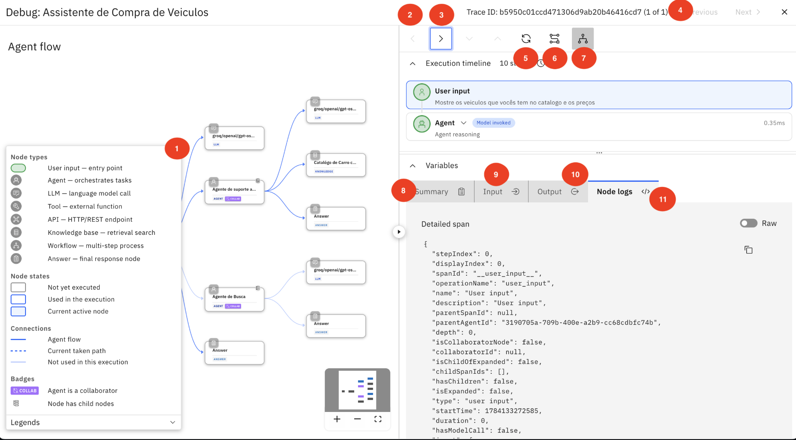
Embed Security: segurança do chat incorporado
A aba Embed Security controla a segurança do chat incorporado em sites e aplicações. A primeira opção define se os builders podem editar as configurações de segurança ou apenas visualizá-las.
Abaixo, a seção Security permite ativar a autenticação e a autorização dos usuários do chat incorporado: em Chat user identity, você informa a chave pública usada para verificar mensagens assinadas em RS256, garantindo que o tráfego venha de usuários reais; em Encrypt sensitive information, a mesma chave é usada para criptografar dados sensíveis.
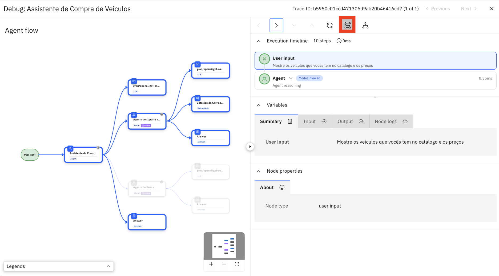
Platform languages: idiomas do tenant
Na aba Platform languages, você define quais idiomas ficam disponíveis para os usuários do tenant e qual deles é o padrão para todos.
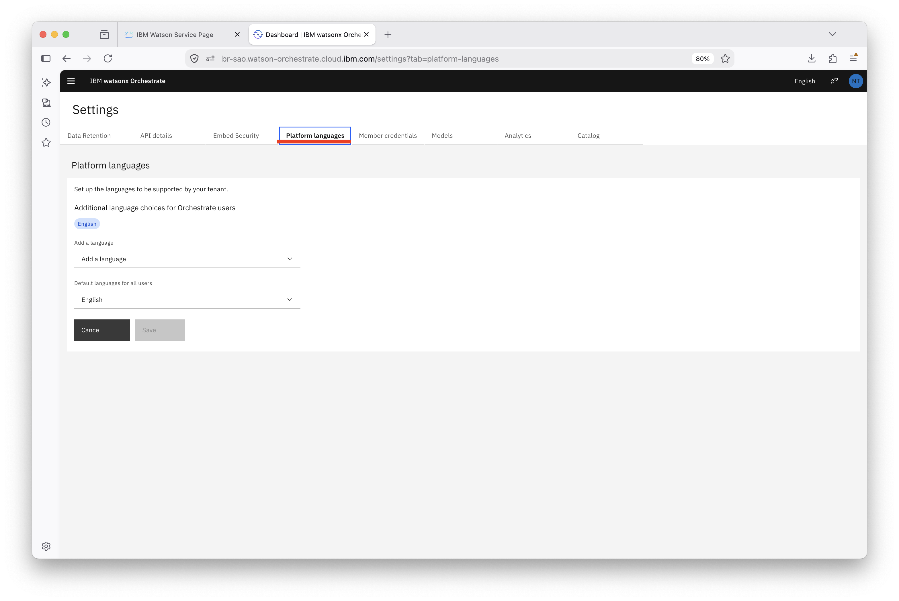
Member credentials: credenciais individuais
A aba Member credentials reúne as credenciais que você mesmo informou nos ambientes de rascunho e produção, o complemento individual das Team credentials que você viu no Security control center. Enquanto nenhuma credencial pessoal for adicionada, a lista aparece vazia, com o botão Add credentials.
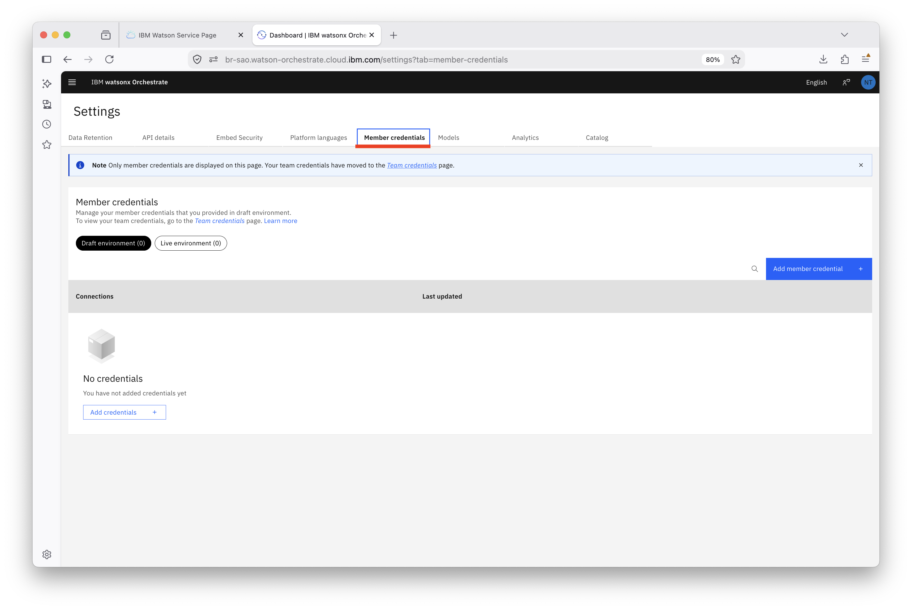
Models: seleção de modelos
Na aba Models, a opção Model selection habilita ou desabilita a escolha de modelos pelos usuários do tenant. Por padrão, ela vem desativada.
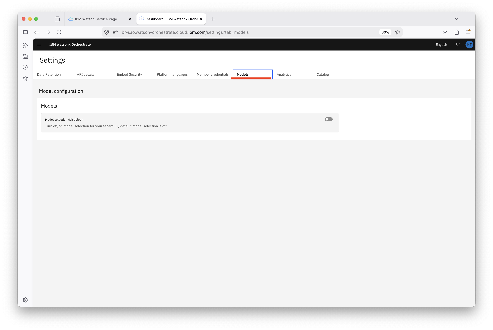
Analytics: mascaramento de PII
A aba Analytics controla como os dados de analytics são coletados e exibidos. A opção PII masking mascara informações pessoalmente identificáveis, como e-mails e telefones, nos metadados de trace: as entradas dos usuários e as saídas dos agentes continuam visíveis, mas os atributos sensíveis detectados são mascarados antes de aparecerem em dashboards, logs e relatórios.
Vale ler a nota logo abaixo do controle: os logs já gerados permanecem intactos, e apenas as traces criadas depois da ativação são mascaradas.
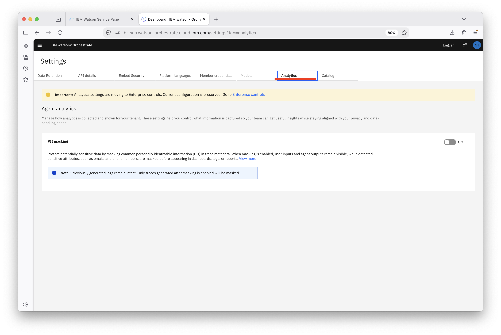
Catalog: acesso a ativos prontos
Por fim, a aba Catalog define como os ativos são acessados e exibidos no catálogo do tenant. A opção Access to prebuilt assets habilita ou bloqueia o acesso dos usuários aos ativos prontos disponíveis na instância.
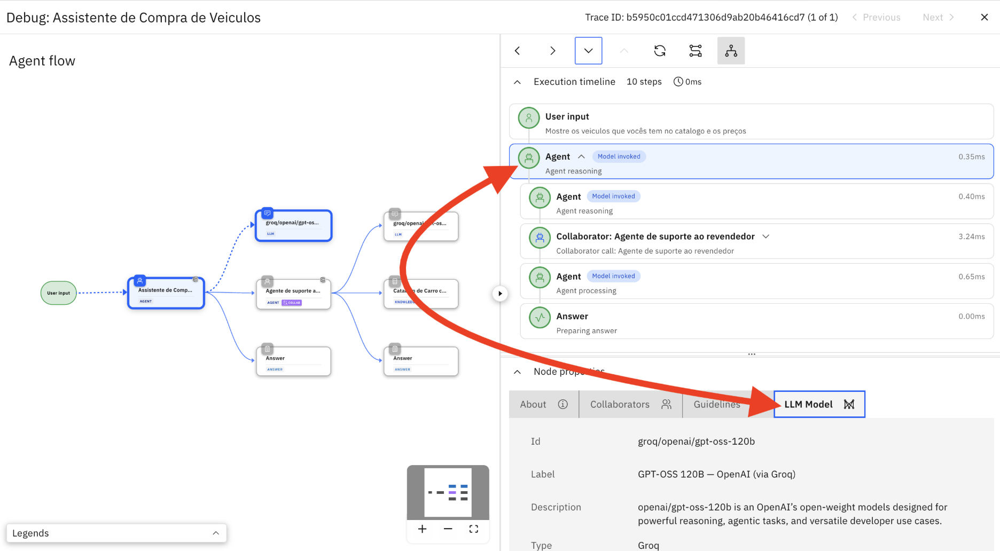
Resumo
Parabéns! 🎉 Você concluiu o Control Plane Lab do watsonx Orchestrate.
Ao longo deste laboratório, você usou o assistente de IA integrado ao painel para fazer perguntas em linguagem natural sobre os pontos críticos e os pontos positivos dos seus agentes, recebendo respostas diretas, com o raciocínio disponível para consulta.
Em seguida, navegou pelas seis abas do dashboard do Agentic Control Plane:
- Overview
- Adoption
- FinOps
- Quality
- Reliability
- Security and Risk
Onde foi possível entender como cada uma resume um aspecto diferente da operação: uso geral, engajamento, custo de tokens, qualidade das respostas, confiabilidade e segurança. Também viu como a janela de tempo (24h ou 7d) e a alternância entre visões por agente e por modelo mudam completamente a leitura dos painéis.
Depois, conheceu o AgentOps, o assistente de otimização de agentes em preview, e percorreu as áreas de administração do tenant: o Security control center, com os acessos de cada agente, as conexões e as credenciais de time, e as configurações em Settings, de retenção de dados e chaves de API a mascaramento de PII e acesso ao catálogo.
Com isso, você agora sabe onde encontrar as principais métricas de adoção, custo, qualidade, confiabilidade e segurança dos seus agentes, e onde ajustar as configurações que sustentam a governança do seu ambiente.
Sou desenvolvedor e quero me aprofundar no watsonx Orchestrate
Todas as operações realizadas também estão disponíveis em uma experiência utilizando o ADK, o Agent Development Kit. Clique aqui para saber mais sobre como criar agentes, tools, bases de conhecimento e muito mais.
Próximos Passos
Este é o último laboratório desta série. Abaixo está uma coletânea de links oficiais, documentação, tutoriais e novidades da IBM watsonx Orchestrate e do Agent Development Kit (ADK) para você continuar se aprofundando.
Última atualização da coletânea: 15/07/2026.
| Recurso | Link |
|---|---|
| Portal oficial da ADK (Welcome) | https://developer.watson-orchestrate.ibm.com/ |
| O que é a ADK | https://developer.watson-orchestrate.ibm.com/getting_started/what_is |
| Instalação / primeiros passos | https://developer.watson-orchestrate.ibm.com/getting_started/installing |
| Comandos CLI úteis | https://developer.watson-orchestrate.ibm.com/getting_started/cli |
| Exemplos | https://developer.watson-orchestrate.ibm.com/getting_started/examples |
Índice completo da doc (llms.txt) | https://developer.watson-orchestrate.ibm.com/llms.txt |
Repositórios e pacotes
| Recurso | Link |
|---|---|
GitHub: IBM/ibm-watsonx-orchestrate-adk | https://github.com/IBM/ibm-watsonx-orchestrate-adk |
PyPI: ibm-watsonx-orchestrate | https://pypi.org/project/ibm-watsonx-orchestrate/ |
Agentes
| Tópico | Link |
|---|---|
| Visão geral de agentes | https://developer.watson-orchestrate.ibm.com/agents/overview |
| Criando agentes nativos | https://developer.watson-orchestrate.ibm.com/agents/build_agent |
| Escolhendo o estilo do agente (ReAct, Flows, etc.) | https://developer.watson-orchestrate.ibm.com/agents/agent_styles |
| Conectar agentes externos (LangGraph, A2A) | https://developer.watson-orchestrate.ibm.com/agents/connect_agent |
| Importar e implantar agentes | https://developer.watson-orchestrate.ibm.com/agents/import_agent |
| Descrições e instruções de agentes | https://developer.watson-orchestrate.ibm.com/agents/descriptions |
| Gerenciar agentes | https://developer.watson-orchestrate.ibm.com/agents/manage_agent |
| Skills specifications (Public Preview) | https://developer.watson-orchestrate.ibm.com/agents/skills |
Ferramentas (Tools) e Toolkits
| Tópico | Link |
|---|---|
| Visão geral de tools | https://developer.watson-orchestrate.ibm.com/tools/overview |
| Tools em Python | https://developer.watson-orchestrate.ibm.com/tools/create_tool |
| Tools baseadas em OpenAPI | https://developer.watson-orchestrate.ibm.com/tools/create_openapi_tool |
| Gerenciamento de dependências Python | https://developer.watson-orchestrate.ibm.com/tools/python_dependency_management |
| Estrutura de resposta e anotações de tools | https://developer.watson-orchestrate.ibm.com/tools/tool_response_structure |
| Logs de tools Python | https://developer.watson-orchestrate.ibm.com/tools/log_behavior |
| Toolkits: visão geral | https://developer.watson-orchestrate.ibm.com/tools/toolkits/overview |
| Toolkits MCP remotos | https://developer.watson-orchestrate.ibm.com/tools/toolkits/remote_mcp_toolkits |
| Toolkits MCP locais | https://developer.watson-orchestrate.ibm.com/tools/toolkits/local_mcp_toolkits |
| Toolkits Python | https://developer.watson-orchestrate.ibm.com/tools/toolkits/python_toolkits |
Agentic Workflows (Flows)
| Tópico | Link |
|---|---|
| Entendendo agentic workflows | https://developer.watson-orchestrate.ibm.com/tools/flows/overview |
| Construindo um flow | https://developer.watson-orchestrate.ibm.com/tools/flows/building_flow |
| Mapeamento de entrada/saída | https://developer.watson-orchestrate.ibm.com/tools/flows/data_map |
| Nó de decisões (Public Preview) | https://developer.watson-orchestrate.ibm.com/tools/flows/decisions_node |
| Tratamento de erros | https://developer.watson-orchestrate.ibm.com/tools/flows/error_handling |
| Atividades multiusuário | https://developer.watson-orchestrate.ibm.com/tools/flows/multi_user |
| Mascaramento de dados sensíveis | https://developer.watson-orchestrate.ibm.com/tools/flows/masking_sensitive_data |
| Scheduler (Public Preview) | https://developer.watson-orchestrate.ibm.com/tools/flows/scheduler |
| Rodar workflows via MCP (Public Preview) | https://developer.watson-orchestrate.ibm.com/tools/flows/mcp_workflows |
| Testando um flow | https://developer.watson-orchestrate.ibm.com/tools/flows/testing_flow |
MCP Server (Model Context Protocol)
| Tópico | Link |
|---|---|
| Instalando o ADK MCP Server | https://developer.watson-orchestrate.ibm.com/mcp_server/wxOmcp_installation |
| Configurando o ADK MCP Server | https://developer.watson-orchestrate.ibm.com/mcp_server/wxOmcp_configuration |
| Conectando clientes MCP | https://developer.watson-orchestrate.ibm.com/mcp_server/wxOmcp_integration |
| Documentation MCP Server | https://developer.watson-orchestrate.ibm.com/mcp_server/wxOmcp_docs_server |
Developer Edition (ambiente local)
| Tópico | Link |
|---|---|
| O que é a Developer Edition | https://developer.watson-orchestrate.ibm.com/developer_edition/wxOde_overview |
| Instalando a Developer Edition | https://developer.watson-orchestrate.ibm.com/developer_edition/wxOde_setup |
| Gerenciando o servidor local | https://developer.watson-orchestrate.ibm.com/developer_edition/manage_local_server |
| Gerenciando a UI local | https://developer.watson-orchestrate.ibm.com/developer_edition/manage_ui |
| Ambiente air-gapped | https://developer.watson-orchestrate.ibm.com/environment/air_gap_environment |
| Boletins de segurança | https://developer.watson-orchestrate.ibm.com/developer_edition/security_bulletins |
Modelos (LLMs)
| Tópico | Link |
|---|---|
| Escolhendo o LLM | https://developer.watson-orchestrate.ibm.com/llm/getting_started_llm |
| Gerenciando modelos virtuais | https://developer.watson-orchestrate.ibm.com/llm/managing_llm |
| Políticas de modelo (Public Preview) | https://developer.watson-orchestrate.ibm.com/llm/model_policies |
| Observabilidade com Langfuse | https://developer.watson-orchestrate.ibm.com/llm/observability |
SDK (Python)
Avaliação (Evaluation) e Observabilidade
| Tópico | Link |
|---|---|
| Visão geral de avaliação | https://developer.watson-orchestrate.ibm.com/evaluate/overview |
| Avaliando agentes e tools | https://developer.watson-orchestrate.ibm.com/evaluate/evaluate |
| Criando dataset de avaliação | https://developer.watson-orchestrate.ibm.com/evaluate/create_data |
| Avaliação rápida | https://developer.watson-orchestrate.ibm.com/evaluate/quick_eval |
| Rubric Evaluations | https://developer.watson-orchestrate.ibm.com/evaluate/rubric |
| Teste de vulnerabilidade de LLM | https://developer.watson-orchestrate.ibm.com/evaluate/llm_vulnerability |
| Traces: visão geral | https://developer.watson-orchestrate.ibm.com/traces/overview |
| Traces via CLI | https://developer.watson-orchestrate.ibm.com/traces/traces_with_cli |
| Traces via Python | https://developer.watson-orchestrate.ibm.com/traces/traces_with_python |
Knowledge Bases, Conexões e Canais
| Tópico | Link |
|---|---|
| Knowledge bases: visão geral | https://developer.watson-orchestrate.ibm.com/knowledge_base/overview |
| Criando knowledge bases | https://developer.watson-orchestrate.ibm.com/knowledge_base/build_kb |
| Por que usar conexões | https://developer.watson-orchestrate.ibm.com/connections/overview |
| Criando conexões | https://developer.watson-orchestrate.ibm.com/connections/build_connections |
| Canais: visão geral (Teams, Slack, WhatsApp, SMS...) | https://developer.watson-orchestrate.ibm.com/channels/overview |
| Adicionando voz a um agente | https://developer.watson-orchestrate.ibm.com/voice/adding_voice_to_agent |
| Configuração de voz | https://developer.watson-orchestrate.ibm.com/voice/managing_voice |
| Plug-ins | https://developer.watson-orchestrate.ibm.com/plugins/plugins |
| Workspaces | https://developer.watson-orchestrate.ibm.com/workspaces/overview |
Tutoriais e Guias
Documentação oficial do produto
| Recurso | Link |
|---|---|
| Página de desenvolvedores do watsonx Orchestrate | https://www.ibm.com/products/watsonx-orchestrate/developers |
| Construindo agentes com a ADK | https://www.ibm.com/docs/en/watsonx/watson-orchestrate/base?topic=agents-building-using-adk |
| Release notes (SaaS) | https://www.ibm.com/docs/en/watsonx/watson-orchestrate/base?topic=release-notes |
| Release notes (On-premises) | https://www.ibm.com/docs/en/watsonx/watson-orchestrate/base?topic=notes-release-premises |
Novidades / "Coisas novas" (2026)
| Item | Link |
|---|---|
| Troubleshooting | https://developer.watson-orchestrate.ibm.com/release/troubleshooting |
| Agentic Control Plane (anúncio, jun/2026) | https://www.ibm.com/new/announcements/introducing-the-agentic-control-plane |
| What's new: comunidade (mar/2026) | https://community.ibm.com/community/user/blogs/daiane-camila-bizari2/2026/04/02/whats-new-in-ibm-watsonx-orchestrate |
| "Orchestrate More, Worry Less" (mar/2026) | https://community.ibm.com/community/user/blogs/alan-francis-cheeramvelil/2026/04/12/orchestrate-more-worry-less-whats-new-in-ibm-watso |
| Newsletter técnica (jun/2026) | https://community.ibm.com/community/user/blogs/gustavo-villegas/2026/05/28/watsonx-orchestrate-news-a-touchpoint-june2026 |
consulte sempre a página What's new para ver a versão mais recente, já que a ADK é atualizada com frequência.